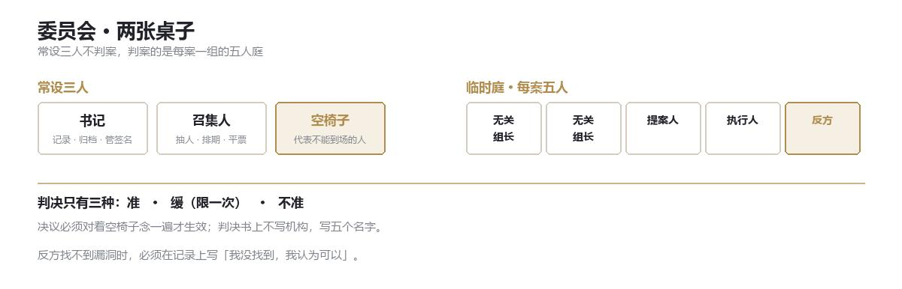

DOC 06 · 伦理道德委员会
伦理道德委员会
内部审查 · 不判断对错，只记录谁签了字

一、定位
伦理道德委员会不是 GACC 的「良心」。
良心是一种态度，而委员会是一种手续。它不做价值判断，只做三件事：让该问的问题被问出来，让该签字的人签上名，让下一次有人查得到这一次是谁决定的。
它不隶属于任何业务部门，直接对总署负责。全名很长，内部通常只叫「委员会」，或者更难听一点——「那把椅子」。
二、常设三人
委员会常设只有三个人，都不判案。
| 职务 | 职责 | 任期 |
|---|---|---|
| 书记 | 记录、归档、保管签名；不投票、不表态 | 终身，且不得由前机动特遣队成员担任 |
| 召集人 | 抽人、排期、维持秩序；仅在平票时投票 | 三年，不得连任 |
| 空椅子 | 永远空着 | 永远 |
三、空椅子
它代表不能到场的人：被处置对象的家属、被誊改的目击者、死了的人。
任何决议，必须对着这把椅子念一遍，才算生效；念的时候，所有人站着。
这条规矩没写在任何条例里，但一百多年来没有人破过。有人试过一次，是 1954 年的一位副座；他站着念完了，之后再也没有提过。
四、临时庭
每个案子组一个五人庭，判完即散。
- 两名无关组长 从与被审部门无关的组里抽，抽到不能推。
- 两名相关方 提案人加执行人。必须本人坐在庭上，不能派人代表。
- 一名反方 由召集人指定，不能拒绝。职责是尽全力找漏洞；找不到，必须在记录上写「我没找到，我认为可以」。
反方不是反对派。反对派有立场，反方只有任务。
同一个庭处理两类案子：实验审查与违纪调查。案由不同，程序一样——都要问、都要签、都要归档。
五、判决
只有三种：
- 准
- 缓 搁置一次会议，重读一遍。一个案子只能用一次。
- 不准 必须写明理由，且理由要给提案人看。
判决书上不写「委员会决定」，写五个名字。
平票时，召集人投那一票。他投完要说一句话，这句话也会被记录：
我这一票，是因为我怕。
六、签名
每个签过「准」的人，都会在自己的档案首页留一行：
某年某月某日，我签了 〇〇 号案。
不写结论，不写理由，只写日期和案号。这一行跟着他调岗、升迁、退休，一直跟到死。
签「不准」的人没有这一行。档案里干干净净——干净，在 GACC 是一种很难得的评价。
七、与律法左手
律法左手不归委员会单独指挥。
调动它，需要书记与首座联署。委员会只有权提出，没有权下令。
这条限制是 1979 年加的。在那之前，委员会可以自己派人。那一年发生了什么，档案里只剩下一个案号。
八、它为什么还在
因为它不解决问题。
它只让每一次「必要之恶」都留下一个具体的人名，而不是一枚机构的印章。
在 GACC，最贵的不是命，是签名。